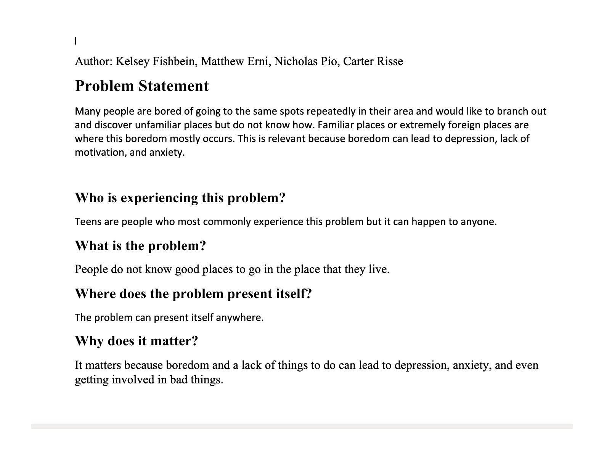
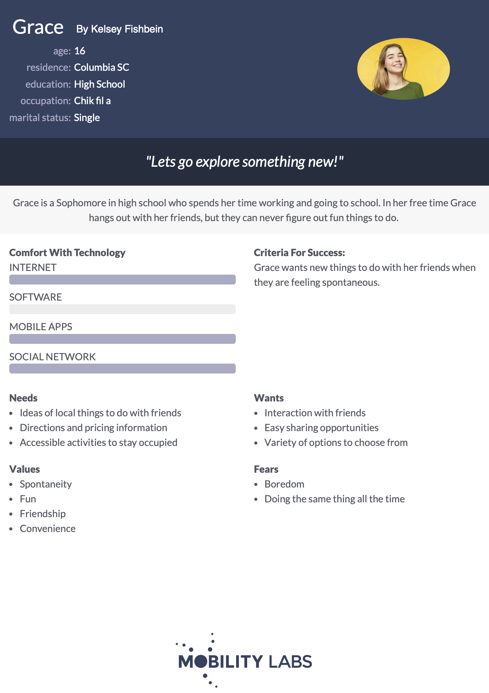
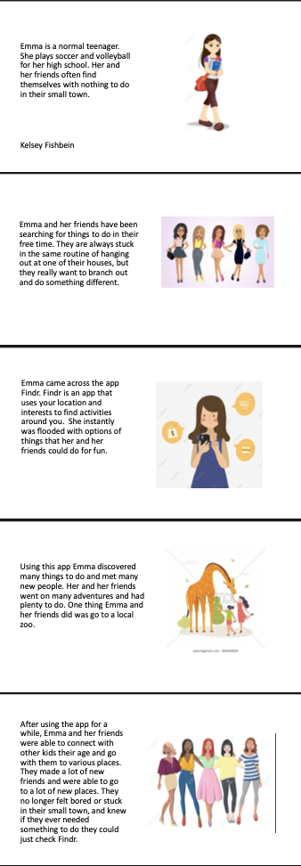
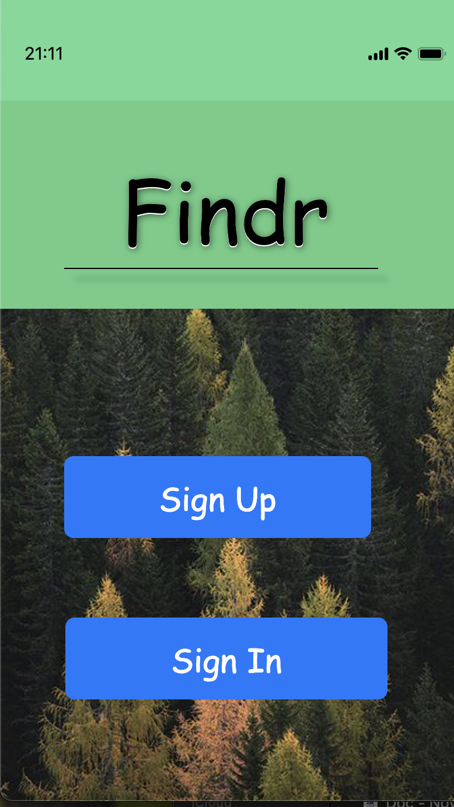

Problem Statement: Places to Go
Many people are bored of going to the same spots repeatedly in their area and would like to branch out and discover unfamiliar places but do not know how. Familiar places or extremely foreign places are where this boredom mostly occurs. This is relevant because boredom can lead to depression, lack of motivation, and anxiety.
Affinity Diagram: Places to Go

My group and I brainstormed about places to go.
Persona: Grace
A persona of a typical Findr user.
Storyboard
A Storyboard gives an example of practical application of the app Findr.
Sketches

Rough ideas of how the application may look.
Low-Fi Prototype: Findr App
A scenario and tasks and the outcomes of usability tests.